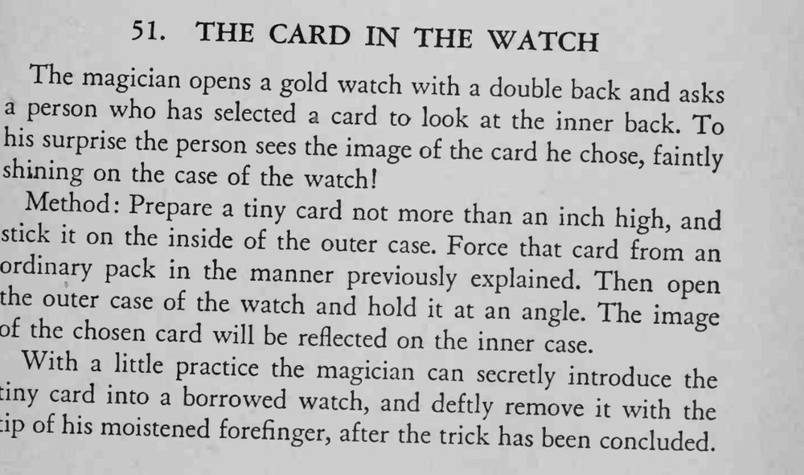

打开双底盖金表，观众看到自己选的牌的影像隐隐映在表壳内侧。
成败在角度：要让小牌的反光正好落进内壳，可先在借来的表上试。

The magician opens a gold watch with a double back and a person who has asks selected a card to look at the inner back To his surprise the person sees the image of the card he chose, faintly shining on the case of the watch! Method: Prepare a tiny card not more than an inch high, and stick it on the inside of the outer case. Force that card from an ordinary pack in the manner previously explained. Then open the outer case of the watch and hold it at an angle. The image or the chosen card will be reflected on the inner case. With a little practice the magician can secretly introduce the tiny card into a borrowed watch, and deftly remove it with the tip of his moistened forefinger, after the trick has been concluded.